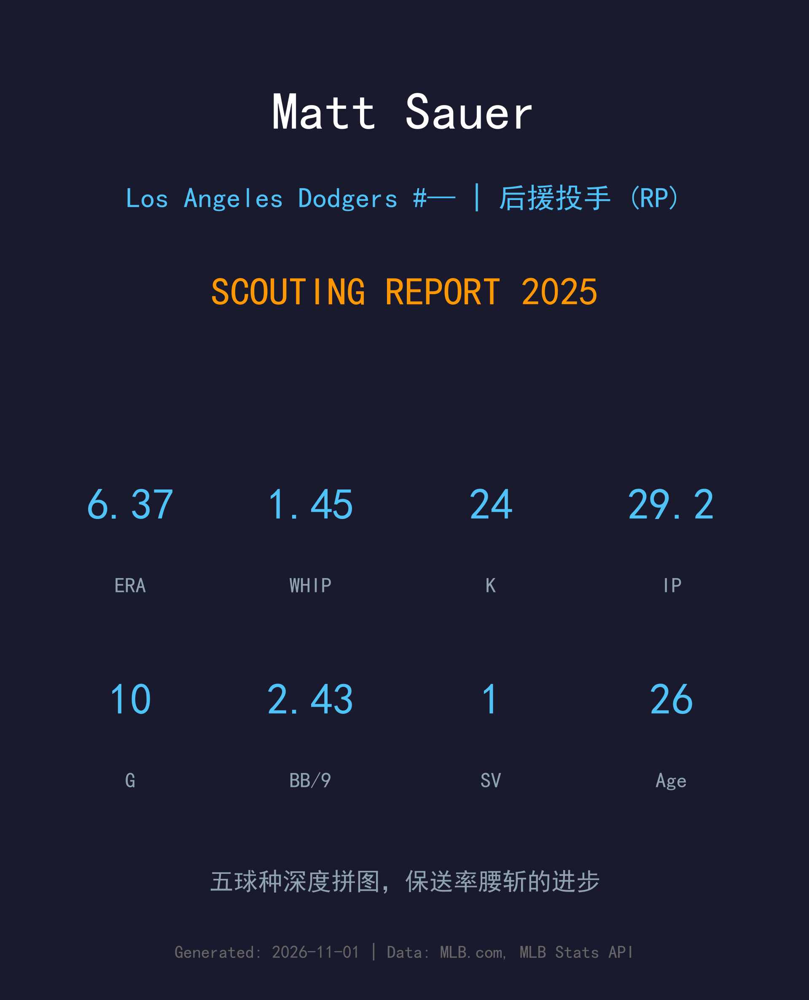
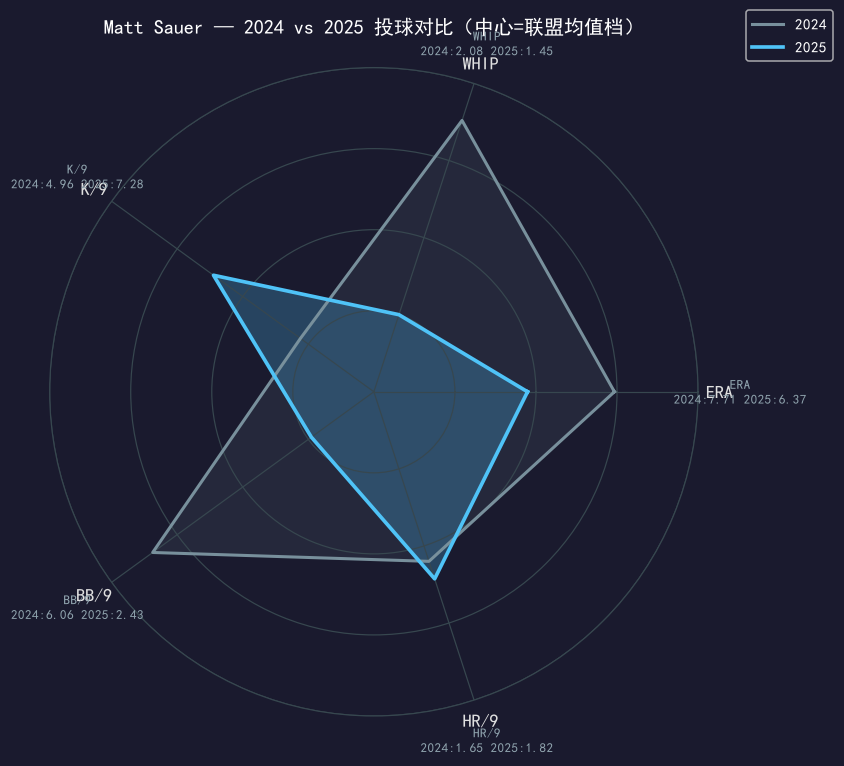
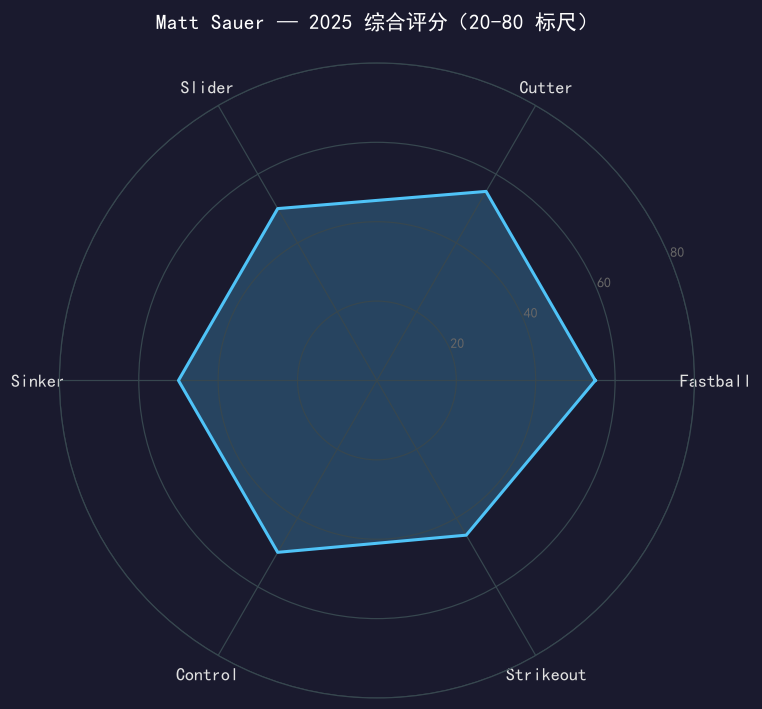

Los Angeles Dodgers #— | 后援投手 | 右投 | 五球种深度拼图，保送率腰斩的进步

Matt Sauer 是道奇 2025 年牛棚里最低调的一名拼图：10 场出赛、29.2 局、6.37 自责分率的表面数字并不好看，但隐藏着一个清晰的技术进步信号——BB/9 从 6.06 腰斩到 2.43，K/BB 从 0.82 升到 3.00。
他的问题不在保送，而在被安打：35 支安打砸进 29.2 局，.289 的被打击率说明他的球进垒点仍然太甜。HR/9 1.82 也不是意外——当每局都面临有人上垒的压力，长打只是时间问题。
从 2025 年 11 月的视角看，Sauer 是一个典型的「深度牛棚彩票」：五球种结构齐全、控球趋势向好、26 岁，距离真正的 MLB 常客只差把被打击率压下去。道奇一向擅长把这种彩票刮出奖来。
3 月 31 日登上大联盟，新人年 14 场救援出赛——在小样本的颠簸中完成了从农场到 MLB 的第一步。
BB/9 从 6.06 降到 2.43、K/BB 从 0.82 升到 3.00，还完成了生涯首次救援成功——控球的质变是这份报告最确定的结论。

| 赛季 | G | GS | W-L | ERA | WHIP | IP | SO | BB | K/9 | BB/9 |
|---|---|---|---|---|---|---|---|---|---|---|
| 2024（新人年） | 14 | 0 | 0-0 | 7.71 | 2.08 | 16.1 | 9 | 11 | 4.96 | 6.06 |
| 2025（道奇） | 10 | 1 | 2-1 | 6.37 | 1.45 | 29.2 | 24 | 8 | 7.28 | 2.43 |
两年 46 局的生涯样本里，进步是真实的：三振率从 4.96 升到 7.28、保送率腰斩、WHIP 从 2.08 压到 1.45。但 ERA 的改善幅度（7.71→6.37）远小于控球的改善幅度——这是「被安打」问题尚未解决的典型形状。简单说：他现在能控制球了，但还没学会如何让打者打不好。这是下一个、也是更难的课题。
2025 赛季真实配球数据（MLB Stats API pitchArsenal）：
使用率第一的当家球种，细小横移用来破坏棒次与制造软弱击球，是他「吃局数」逻辑的核心。
94+ mph 的速球底子扎实，好球带上缘的进垒球路有成为三振武器的潜力。
两好球后的追杀选项，速差与位移幅度都在平均以上，完成度尚可。
与四缝线 interchangeable 的下沉版本，诱导滚地的效率工具。
零星使用的变化球，若完成度提升可成为对付左打者的关键武器。
BB/9 6.06→2.43 不是噪声，而是可复现的技术改进：他的投球机制更稳定了，出手点更一致了，不再需要用保送「保险」每一个打席。K/BB 3.00 已经达到合格 MLB 后援的门槛——这是 2025 年最值得写进档案的结论。
.289 的被打击率与 1.82 的 HR/9 指向同一个问题：他的球进垒点还是「可预测地甜」。五球种虽多，但缺少一颗真正让打者挥空的招牌——K/9 7.28 说明他的三振更多来自「打者挥棒落空一两次」而非「两好球后的终结」。把速球内角与卡特外角的组合练到打者「明知道还来不急反应」，是他从深度牛棚走向常规轮换的最后一步。
26 岁、五球种、控球趋势向好——Sauer 是道奇「牛棚工厂」最喜欢的原材料。2026 年他大概率从 3A 起步等待机会，但只要道奇牛棚出现空隙，他的名字会第一个被叫起。

深度牛棚彩票，控球已兑一半
C+ 级 / 深度牛棚（发展变量）
道奇 2025 季后赛夺冠之路：外卡 2-0 红人 → NLDS 3-1 费城人 → NLCS 4-0 酿酒人 → 世界大赛 4-3 多伦多蓝鸟。
Sauer 未能进入季后赛名单。在牛棚名额的竞争中，教练组优先选择了经验更丰富的老将和季后赛内容更稳定的投手。
Matt Sauer 的 2026 年大概率从 3A 开始：控球已经达标，接下来要证明他能让大联盟打者「打不好」。这是一条被无数后援投手走过的路——道奇体系里也不乏先例。只要被打击率能压到 .250 以下，他就能从「彩票」变成「常客」。
理想剧本：3A 强势开局，年中回大联盟站稳牛棚末段
现实基准：大联盟与 3A 之间的摇摆人，等待机会
上行惊喜：指叉球进化后，成为第七八局的黑马
Matt Sauer 来自加州中海岸的圣玛丽亚，2017 年选秀进入职业体系，在多个球队的发展系统中辗转多年。他的 ascent 不算快——从新人联盟到 3A，他用了整整七年时间，但每一次升级，他的球种库就多一颗新武器。
2024 年 3 月 31 日，他登上了大联盟。新人年的 7.71 自责分率是个糟糕的开场白，但 2025 年披上道奇战袍后，他完成了职业生涯最重要的一次调整：把 BB/9 从 6.06 砍到 2.43。对后援投手来说，控球是入场券——他已经拿到了。
2025 年 11 月的 Matt Sauer 还在等待属于他的机会。在道奇这座牛棚工厂里，最不缺的就是机会，最缺的从来都是准备好的投手——而他，已经准备好了一半。